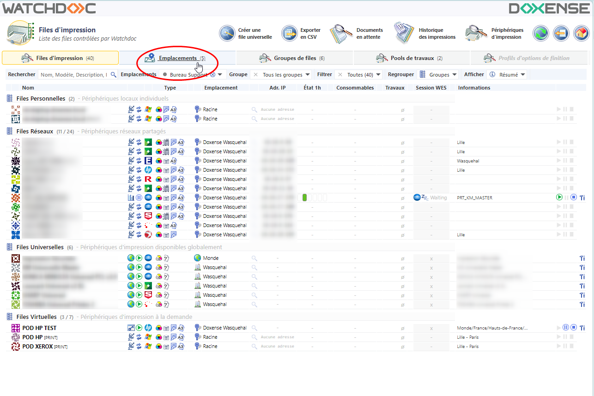
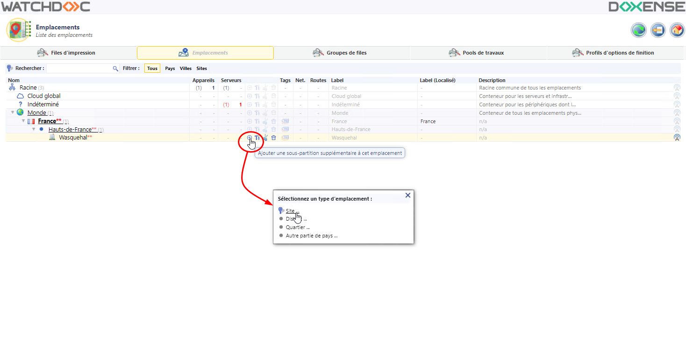
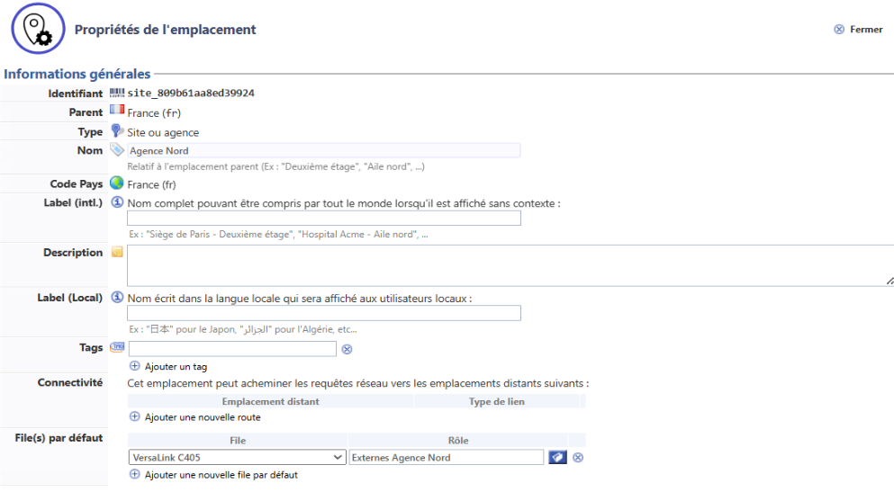
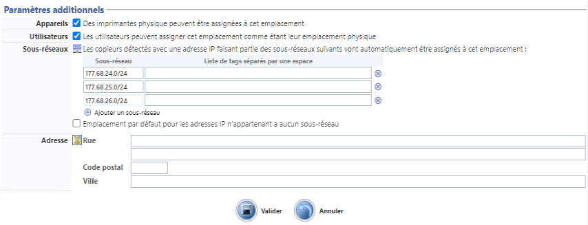

Accéder à l'interface d'administration
-
Depuis le Menu principal section Exploitation, cliquez sur Files d'impression, groupes de files & pools :

-
Depuis l'interface Files d'impression, cliquez sur l'onglet Emplacements :

è Vous accédez à la liste qui comprend 3 emplacements par défaut :
-
Cloud global : emplacement dédié à l'administration des serveurs hébergés dans le Cloud ;
-
Indéterminé : emplacement non utilisé, réservé à des développements futurs ;
-
World : emplacement "parent" par défaut, non-modifiable, auquel il est possible d'ajouter des emplacements "enfants".
Créer un emplacement
Dans l'interface Liste des emplacements
-
dans la liste des emplacements, placez-vous sur l'emplacement sous lequel vous souhaitez ajouter un ou des emplacements :
-
cliquez sur le bouton
 situé à droite de l'emplacement :
situé à droite de l'emplacement : -
dans la liste, sélectionnez le type d'emplacement à créer :

Configurer un emplacement
-
dans la boîte Créer un nouvel emplacement, indiquez le type d'emplacement que vous souhaitez ajouter (cette étape n'apparaît pas si vous êtes au niveau d'un site/agence) ;
-
dans l'interface Créer un nouvel emplacement,renseignez les Informations générales associées à cet emplacement :
-
Nom : nom affiché dans les interfaces d'administration et aux utilisateurs ;
-
Sub-Type : pays, région, département, ville, site, bâtiment, bureau...
-
Code Pays : code correspondant au pays, automatiquement renseigné à l'aide de l'emplacement-parent sous lequel le nouvel emplacement est créé ;
-
Label (Intl.) : libellé compréhensible (attribué à l'emplacement) qui s'affiche dans les interfaces utilisateurs ;
-
Description : complément d'information relatif à l'emplacement affiché dans les interfaces d'administration et aux utilisateurs ;
-
Label (Local) : libellé compréhensible (attribué à l'emplacement), écrit dans la langue du lieu où va être affiché le libellé ;
-
Tags : saisissez un ou plusieurs qui contribuent à qualifier l'emplacement. Le ou les tags servent de critères de discrimination;
-
Connectivité : spécifiez un ou plusieurs sites distants auxquels Watchdoc est autorisé (ou non) à envoyer des demandes d'impression. Cette fonction est utile si les périphériques d'un site ne sont pas disponibles (en cas de panne) ou pour faciliter l'impression aux utilisateurs mobiles.
-
site distant : sélectionnez un ou plusieurs sites distants dans la liste ;
-
-
Type de lien : dans la liste, sélectionnez le type de lien qui peut être établi ;
-
bloqué : sélectionnez cette option pour bloquer explicitement tout transfert entre le site et un autre site ;
-
sortant uniquement : sélectionnez cette option pour autoriser un flux sortant de l'emplacement configuré vers l'emplacement distant désigné ;
-
VPN de site à site : sélectionnez cette option pour autoriser les transferts bidirectionnels entre l'emplacement configuré et l'emplacement distant désigné :
-
-
File(s) par défaut : vous pouvez configurer une file, proposée par défaut pour cet emplacement et pour un rôle prédéfini (cf. Configurer une file par défaut) ; réitérez l'opération si vous souhaitez associer plusieurs files par défaut à d'autres rôles pour cet emplacement :

-
-
Pour un emplacement de type Site ou Cloud, complétez les Paramètres additionnels :
-
Appareils : cochez cette case pour autoriser l'association de périphériques d'impression à cet emplacement. Ce paramètre permet, par exemple, de ne pas autoriser l'association des périphériques aux niveaux génériques (trop vagues) pour privilégier l'association des périphériques à un niveau spécifique.
N.B. il est cependant important de cocher cette case pour l'emplacement "Cloud" afin de permettre d'associer des périphériques d'impression en cas de télétravail. -
Utilisateurs : cochez cette case pour permettre à l'utilisateur de Watchdoc Print Client de sélectionner l'emplacement (et les aux périphériques d'impression qui y sont associés).
Ce paramètre ne peut être activé que sur les emplacements situés au dernier niveau de la hiérarchie.
-
Sous-réseaux
-
dans Sous-réseau, saisissez la plage d'adresses IP associée à l'emplacement : ainsi, tous les périphériques d'impression et postes utilisateurs inclus dans cette plage seront rattachés à cet emplacement.
Un emplacement peut avoir plusieurs sous-réseaux.
Vous pouvez indiquer une plage d'adresses IP privées ou une adresse IP publique.
Dans une architecture cloud, la déclaration de l'IP publique permet de localiser tous les périphériques et les postes utilisateurs connectés à cet emplacement.
-
dans Liste de tags, saisissez des libellés permettant de caractériser le sous-réseau. Les tags constituent des critères de discrimination (pour un usage ultérieur ou pour faciliter la recherche).
Si vous souhaitez exclure un sous-réseau de la détection automatique des périphériques, saisissez le tag users dans ce champ.
-
Emplacement par défaut pour les adresses IP n'appartenant à aucun sous-réseau : cochez la case pour permettre d'associer à cet emplacement les adresses IP qui ne seraient pas incluses dans les sous-réseaux configurés précédemment.

-